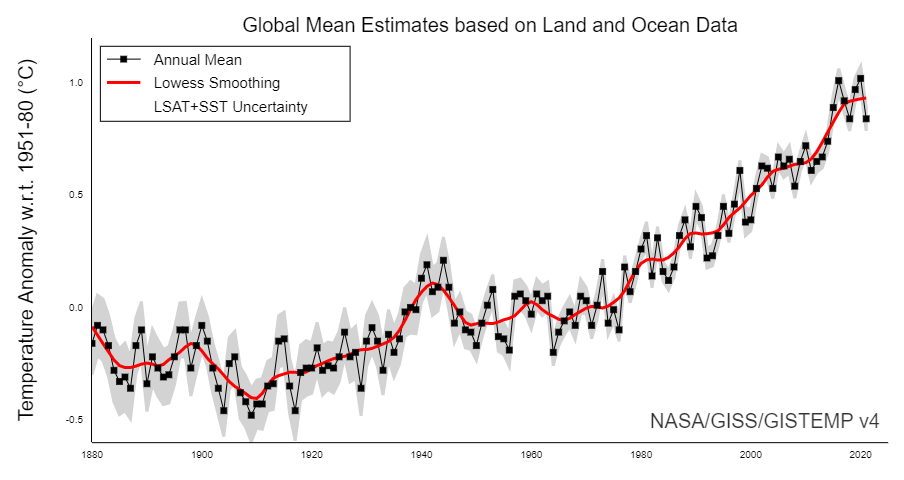
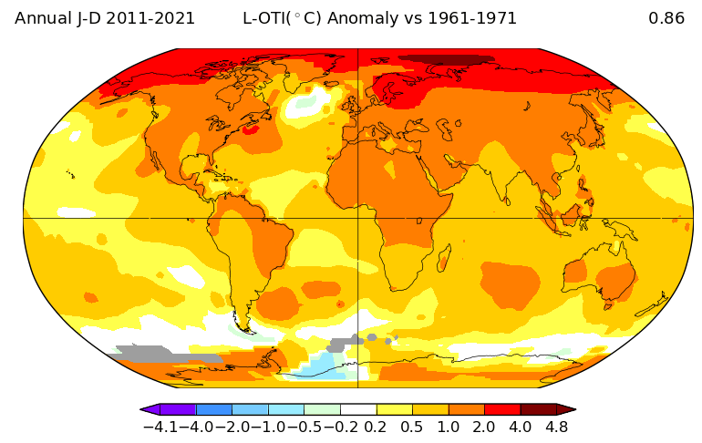
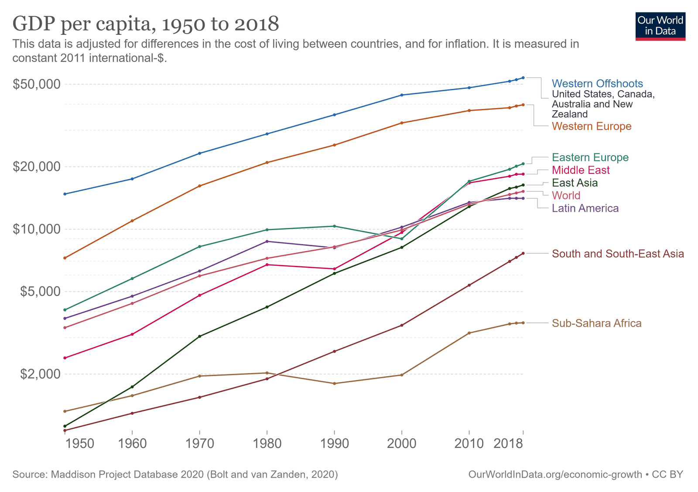
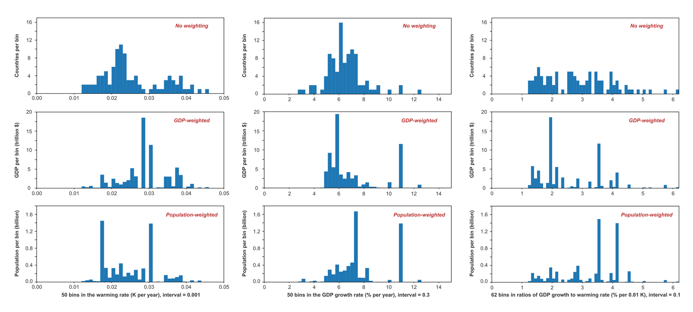
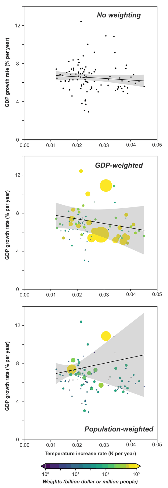
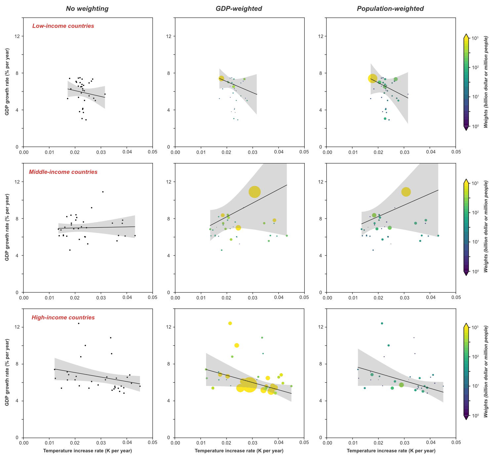
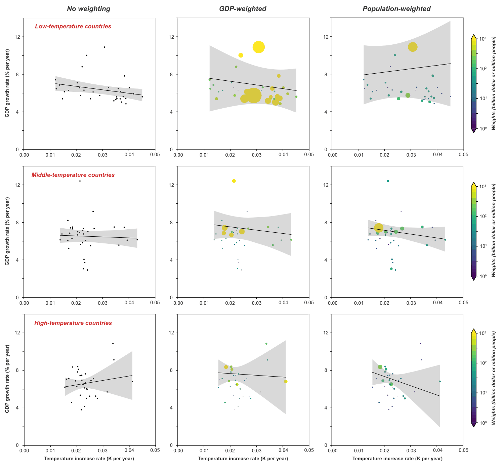

Over the past 50 years, the world has seen a substantial amount of global warming,

And there has been substantial regional variability in the rate of warming.

The world has also seen a lot of GDP growth, with substantial regional variation in the rate of GDP growth.

These observations led us (Lei Duan and myself) to ask whether there was a statistically significant relationship between country-level rates of warming and rates of GDP growth over the past half century.
We used country-level temperature change data from Berkeley Earth, kindly provided to us by Zeke Hausfather. We used GDP data in 2015 USD from the World Bank. For population, we used data from NASA’s SEDAC. We focus on the 50-year time period from 1971 to 2020, and include only countries that had data for the full 50 years. We performed country-level linear regressions, weighting countries in three different ways: (1) countries weighted equally; (2) countries weighted by GDP; and (3) countries weighted by population.
For each country, we estimated an average rate of temperature increase with an ordinary least-squares regression of country-level annual mean temperature versus time; estimated an average continuous rate of GDP increase with an ordinary least-squares regression of the logarithm of country-level annual GDP versus time. We report results for temperature increase in units of K/yr and for GDP growth rates in units of %/yr.
If for each country, we divide the GDP growth rate trend by the temperature rate trend, we get a slope in units of %GDP/yr per K/yr or, equivalently, %GDP/K. The histograms for the country level warming rates, GDP growth rates, and ratios of GDP growth to rates of warming look like this:

The simple point of the above figure is to illustrate that every country has experienced a warming trend over the past half century, and every country has experienced positive GDP growth.
The ratio of GDP growth to warming rate has therefore been positive in every country. This is a reminder that there are many factors that influence GDP growth. Temperature increases may have slowed GDP growth in many countries but climate change has not been the primary determinant of GDP growth.
To investigate whether, on the half-century scale, there are robust relationships between country-level rates of warming and country-level rates of GDP growth, we performed linear regressions of each country’s GDP growth rate against its rate of warming, with those rates determined as described above.
Because countries are not normally distributed in their properties, we estimated uncertainties in the regression by using a bootstrap approach — doing 2,000 regressions sampling from our data by choosing countries randomly from the set of complete countries, with replacement.
Our primary results are displayed in this figure:

Note that a horizontal line would be consistent with the 95% uncertainty range for all three country weightings. Our conclusion from this preliminary analysis was that there are too many other things affecting country-level GDP growth over the past 50 years for a climate signal to show up strongly in a global regression on annual-mean country-level temperature and GDP data.
The next thing we did was to look at whether there were differential impacts based on the GDP of the countries, so we stratified countries into three income groups with approximately equal numbers of countries in each group. There may be some indication of negative climate impact on GDP growth in the low- and high-income countries, but not at a level that would permit publication in a high-quality journal.

Regressions in the low-income countries are strongly influenced by India, which experienced both relatively modest warming and relatively high rates of GDP growth. Regressions in the middle-income countries are strongly influenced by China, which experienced both substantial warming and very high rates of GDP growth.
Some climate damage functions predict net benefits of global warming for cold countries and net harm for warm countries. Therefore, we did an analysis partitioning countries into three groups based on mean country-level temperature. The result of those regressions appears in the next figure:

Again, we do not see strong trends. One might project that warming would have the strongest negative influence in the highest-temperature countries, but no strong signal emerges from this data. The signal of climate damage, if it is there, appears to be overwhelmed by other factors that influence rates of GDP growth.
We understand that there are many things we could have done to try to account for other sources of variability with the aim of isolating the effects of climate change as a residual. However, after consideration, we decided this was not a good application of our time.
It is possible that future climate change might produce a large amount of damage even if historical climate change did not cause a lot of damage. (It should be noted that there are a number of studies identifying historical climate damage, for example Callahan and Mankin (2022).) Many so-called “climate damage functions” do not show substantial climate damage below 1 C of warming but then show substantial climate damage at higher warming levels.
We thought about preparing this analysis for peer-reviewed publication, but the basic conclusion is that there are many factors that affect GDP growth, and that without considering those factors it is difficult to discern a signal of multi-decadal warming trends on multi-decadal GDP growth.
In closing, I would like to remind people that I have spent most of my professional life working on better understanding climate change and helping to facilitate a transition to a global economy that does not rely on using the atmosphere and oceans as waste dumps for our CO2 pollution.
Our analysis comparing half-century trends in temperature change with half-century trends in GDP growth for the period 1971-2020 did not provide strong evidence for a relationship between these two parameters. However, our uncertainty range is so large that our analysis does not serve to exclude a very strong historical relationship between temperature change and GDP growth. Our failure to provide compelling evidence for this relationship is not evidence that this relationship does not exist.
NOTE: The calculations and figures presented here were done by Lei Duan, working interactively with me.
ALSO NOTE: Others, including Richard Newell and colleagues, have done more sophisticated analyses addressing this issue.